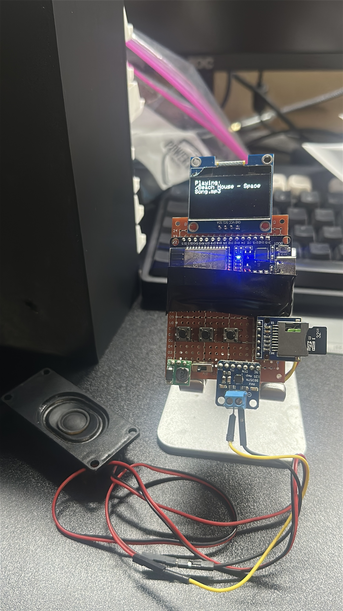

BUILDING SOMETHING JUST BECAUSE IT SOUNDS FUN.
This project started because I was bored one day and decided that making my own MP3 player would be cool.
I built the prototype around an ESP32 using perfboard and programmed it using the Arduino IDE.
A small ESP32-based MP3 player prototype that started because I thought building my own music player would be interesting.

This project started because I was bored one day and decided that making my own MP3 player would be cool.
I built the prototype around an ESP32 using perfboard and programmed it using the Arduino IDE.
Rather than designing a custom PCB first, I used perfboard so I could quickly wire the system together and experiment.
Projects like this are useful because they let me try ideas without needing every detail to be perfect before I start.
Perfboard made it possible to build and modify the circuit quickly.
The ESP32 gave me a flexible controller for experimenting with the project.
Hand-wired prototypes require careful debugging of connections and software.
The project reminded me that some of the best learning comes from simply trying an idea.